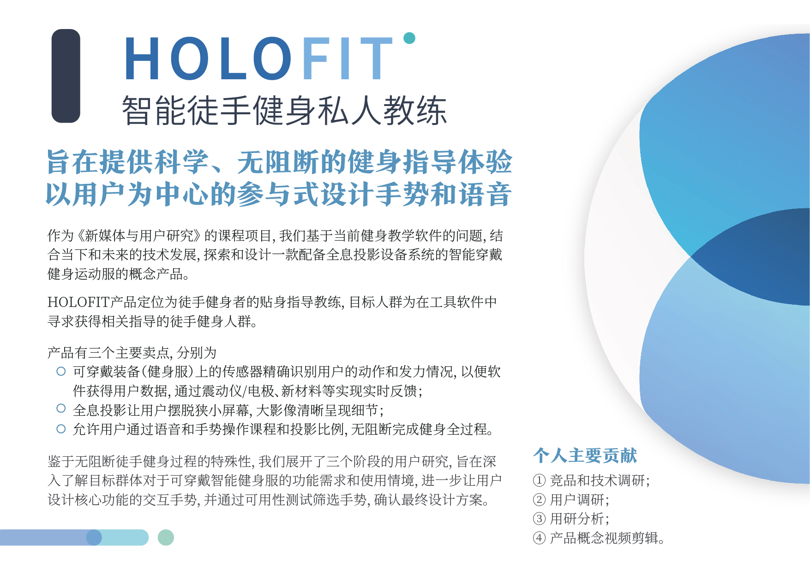
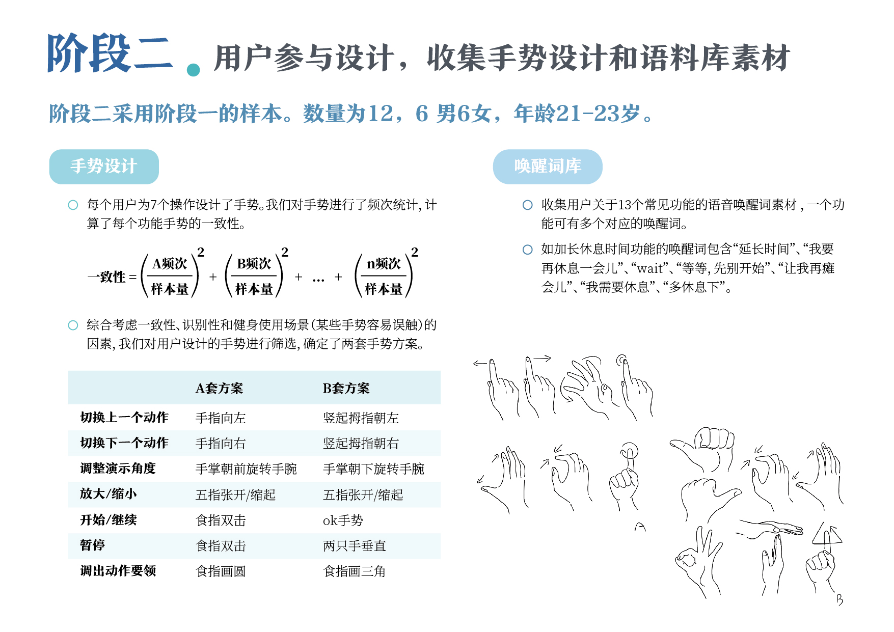
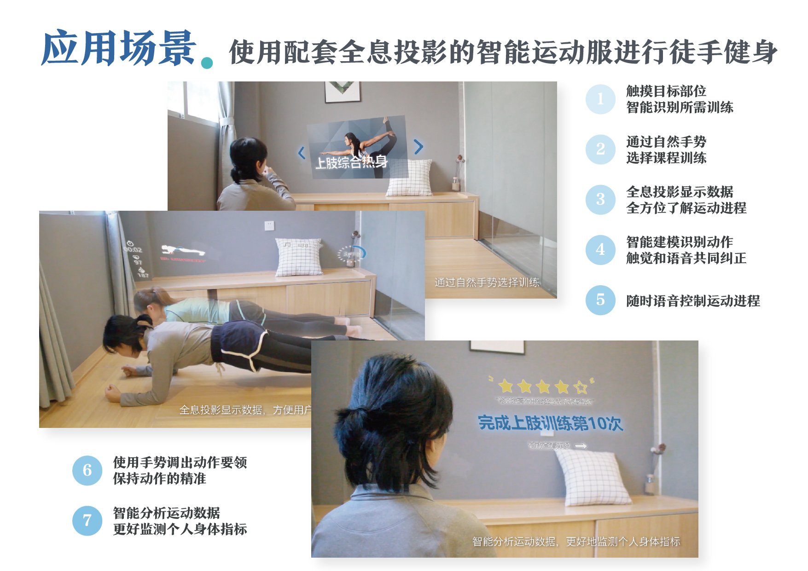

HOLOFIT
智能徒手健身私人教练
项目简介
作为《新媒体与用户研究》的课程项目，我们基于当前健身教学软件的问题，结合当下和未来的技术发展，探索和设计一款配备全息投影设备系统的智能穿戴健身运动服的概念产品。
HOLOFIT产品定位为徒手健身者的贴身指导教练，目标人群为在工具软件中寻求获得相关指导的徒手健身人群，旨在提供科学、无阻断的健身指导体验。
项目过程中采取了以用户为中心的参与式设计方法对手势和语音进行了设计，主要分为三个阶段：首先深入了解目标群体对于可穿戴智能健身服的功能需求和使用情境，进一步让用户设计核心功能的交互手势，最后通过可用性测试筛选手势，确认设计方案。
该项目为课程项目，完成于2018年11月13日。
小组成员包括蔡桐、高冕、刘颖欣和曾蔚，排名不分先后。


